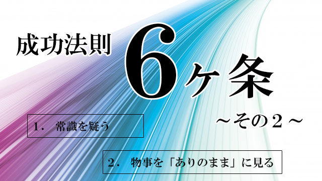

- 常識を疑う
- 物事を「ありのまま」に見る
- 情熱と集中力
- 高い共感力
- 誠実さと実行力
- 知的好奇心と勉強意欲
1.常識を疑う
これは狭い枠に自分を閉じ込めず、広い視野と囚われない心を持つ人間を育てる重要なポイントです。
常識と一口に言っても様々なレベルがあり、礼儀や社交上、人として当然守るべきルールとしての「常識」もあります。
しかし多くの場合、常識とはたまたまその時代、その地域で「当たり前」とされている因習に過ぎません。極端な場合、特定の会社とか組織、単なるグループの間だけで通用する一時的なものでさえあります。
あるいは、時の権力者が民衆を支配し自分の都合を押し付けるために作り上げた道具でしかないこともあります。
（たとえば戦争中アメリカやイギリスは「鬼畜」が常識であり「神の国日本は不滅」が常識だった）
また、会社などでも「ウチは昔からこうやるのが当たり前」「ウチではこれが常識」という伝統に名を借りた「常識」が幅を利かせていたりします。
こういう「常識」はまず疑ってかかった方が良いのです。
古い常識にこり固まった人は「正しい物事のあり方」「真実」が見えてこないからです。
かつて24時間営業の店など常識外でした。それは「深夜に買い物客など来るはずがない」という「常識」があったためです。
その常識を疑う人がいたからコンビニエンスストアーを流行らせることができた。
学問の進歩も同じ。
アインシュタインの相対性理論は、ニュートン力学という常識を疑ったからこそ誕生することができた。
つまり物事の進歩発展は、常に前代の「常識」を疑うことからスタートするわけです。
常識を少しも疑わない人は、その人が属している組織も自分自身をも発展、成長させることはできません。
そこに居座る「常識」こそが進歩改善を妨げる一大要因であることがあまりに多いからです。
昨日の常識は今日の非常識、今日の常識は明日の非常識。
皆が疑いもせず当たり前のこととしていることを疑ってみる。こういう姿勢を育てたいものです。
もちろん何でもかんでも疑えば良いというものではありません。それではただの天邪鬼です。
大切なのは多数派の言うことを無批判に信じるのではなく違う角度、異なる視点で物事に光をあてるということです。
2.物事を「ありのまま」に見る
さて、2番目は物事をありのままに見る力ですがこれは本当に難しいことで、他人や出来事そして置かれた状況を正確に見通すことのできる人は稀といってよいでしょう。
それは、出来事や状況が本当の意味で何を意味するのかリアルタイムで理解することは難しいからです。
人はたいてい、時が経過してから始めて「あれはこういう意味だったのか」と得心します。
他人に対しても私たちは「好き嫌い」や、価値観の違いに気を取られ、正しくありのままを見ることができません。
そして「ありのまま」を正しく見れないと私たちの判断は常に誤ったものになってしまいます。
ところで「ありのまま」を見ることがこんなにも難しい理由は何でしょう。
それは、私たちが思考や感情、観念や価値観を通して物事を見るからです。
独自のフィルターを通して見ているわけです。
他者の言動に対しても「あれはどういう意味で言ったのか。もしかしたら私のことを悪く思っているのではないか」など、不安を感じたり裏の意味を探ったりと素直に受け取りません。
出来事や状況に対しても、自分にとって都合が良いか悪いか善か悪かなど独自の価値判断を下してしまいがちです。
根本的に私たちの心には、不安や恐れがあり他者や状況から身を守ろうと防衛の姿勢をとっています。
この防衛本能こそが、物事を「ありのまま」に見ることを妨げている元凶なのです。
私たちは他人を前にしたとき、新しい状況、起こる出来事に直面したとき、瞬時に過去の記憶データに基づいて「これはこうに違いない」「こういうときはこうすべきだ」と判断し、できるだけ危険や不安を回避しようとします。
記憶というデータを参照し、ただちに「こうに違いない」と色づけし意味づけするわけです。そしてデータを参照するとき、そこに過去の苦い思いやら、感情、無数の観念や価値観が磁石のように吸い寄せられ独自のフィルターができあがります。
要するに私たちは自分独自のフィルター越しに物事を見ていて、本当に中立（ニュートラル）に見ているわけではないということです。
そのことをまず自覚すること。それが大事であると思います。
フィルターを外し心をオープンにする
物事をありのままに見られない元凶に、根源的な不安や恐怖があると言いました。
ですから、私たちはこの不安や恐怖をある程度軽減させなければなりません。そのために必要以上に自分を守ろうとする姿勢、防御の壁を高く築き上げないよう日頃から自覚しておくことが重要です。
それにはやはり子どもの頃から、心を開くこと正直に自分をオープンにさらすことが奨励されます。
多少の欠点も弱点も恐れず、無邪気に自分をさらす人を誰も攻撃したりしないのです。
隠し立てしたり自己を開示せず、他人に弱みを見せまいと汲々としている人ほどかえって他者から疎まれ攻撃されるものです。
心を開いて接すれば他者との一体感も生まれ恐れの感情を持ちにくい。
成功者は大体オープンな人であるのはそのためです。
逆に、いつも自分を守ろうとし防御の壁を高くしている人は、新しい状況や出来事をネガティブに「意味づけ」し、安全だと思われる古い世界にいつづけようとします。
そういう人はいつまでも同じような環境、同じような人間関係を続け発展性もなく、年と共に世界は狭くグレーに染まっていくでしょう。
さらに防衛的な思い、感情、観念でがんじがらめになっているから物事を中立（ニュートラル）に見て、適切に判断することは難しい。
結果として新しいアイデアを思いついたり、状況を改善し他者に貢献することも困難になります。
仕事上の成功は到底おぼつかないでしょう。
こういう人は自分がつけているフィルターに気づかず、物事がうまくいかないのは他人や環境のせいと考えるからです。
成功者とは真逆の考え方です。
こうならないために、親や教師、周りの大人たちは子どものうちから利己的な防衛姿勢を厳しく排し、正直でオープンな心を育てたいものです。
子どもの生活の様々な機会をとらえて、他者は信頼に値するものだとうことを教えたい。
社会は近年、ますます不信と不寛容を人に強いてくるように思います。
このような風潮に流されず、大人は勇気をもって子どもや若者に他者を信頼し、自らを正直にオープンにすることの大切さを教えていくべきだと思います。
世間の常識に囚われず物事をありのままに見ることが成功者の資質である。
それには基本として、常に正直でオープンな心でいること。自分のエゴに囚われない強さが必要であることを強調しておきたいと思います。